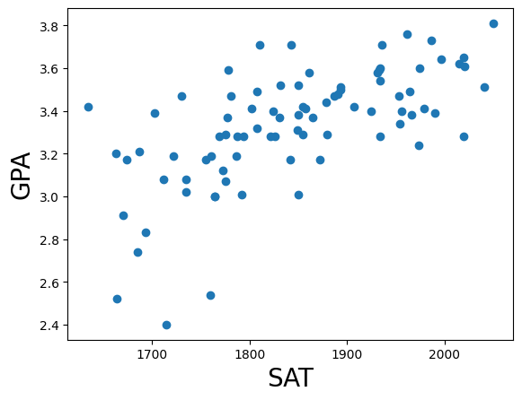
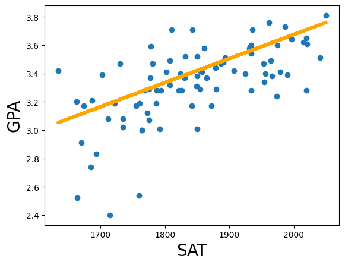

Descargar Datos
Descargar archivo CSV de datos
Importación de Bibliotecas
import numpy as np
Carga de Datos
data = pd.read_csv('1.01.*Simple+linear+regression.csv')
Visualización de Datos
SAT
GPA
1714
2.40
1664
2.52
1760
2.54
1685
2.74
1693
2.83
... (84 filas en total)
Estadísticas Descriptivas
SAT
GPA
count
84.000000
84.000000
mean
1845.273810
3.330238
std
104.530661
0.271617
min
1634.000000
2.400000
25%
1772.000000
3.190000
50%
1846.000000
3.380000
75%
1934.000000
3.502500
max
2050.000000
3.810000
Preparación de Variables
y = data['GPA']
Gráfico de Dispersión

Relación entre puntajes SAT y GPA
Modelo de Regresión Lineal
x = sm.add_constant(x1)
Resultados del Modelo
Dep. Variable:
GPA
R-squared:
0.406
Model:
OLS
Adj. R-squared:
0.399
Method:
Least Squares
F-statistic:
56.05
Date:
Tue, 08 Jul 2025
Prob (F-statistic):
7.20e-11
Time:
16:03:54
Log-Likelihood:
12.672
No. Observations:
84
AIC:
-21.34
Df Residuals:
82
BIC:
-16.48
Coeficientes
coef
std err
t
P>|t|
[0.025
0.975]
const 0.2750
0.409
0.673
0.503
-0.538
1.088
SAT 0.0017
0.000
7.487
0.000
0.001
0.002
Diagnósticos
Omnibus:
12.839
Durbin-Watson:
0.950
Prob(Omnibus):
0.002
Jarque-Bera (JB):
16.155
Skew:
-0.722
Prob(JB):
0.000310
Kurtosis:
4.590
Cond. No.
3.29e+04
Notas:
Standard Errors assume that the covariance matrix of the errors is correctly specified.
The condition number is large, 3.29e+04. This might indicate that there are strong multicollinearity or other numerical problems.
Línea de Regresión

Línea de regresión ajustada a los datos
plt.scatter(x1,y)
Luis Barragan, PhD Head of Data & Business Intelligence
Portafolio Estratégico © 2026